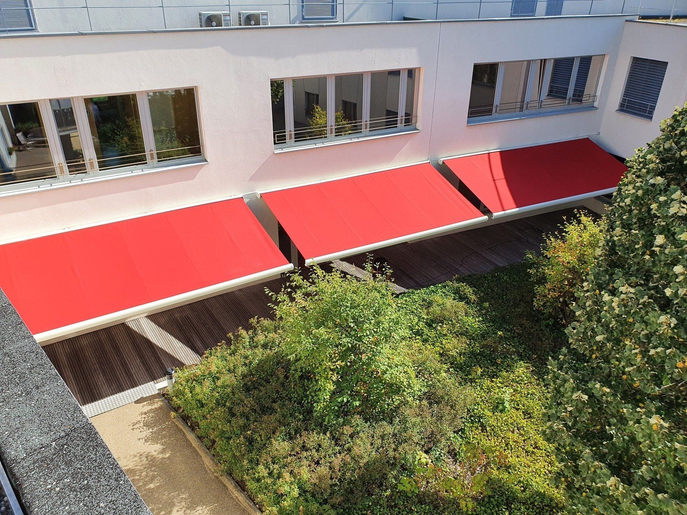
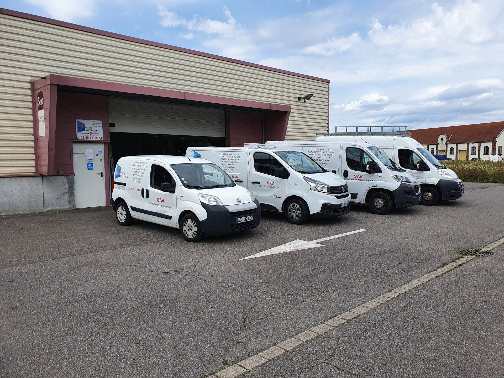
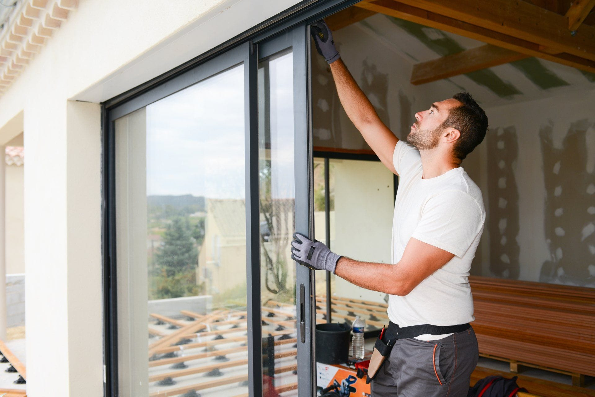

Notre équipe vous accompagne tout au long du projet, de l'étude préalable aux finitions, en passant par la fabrication et la pose de vos menuiseries intérieures et extérieures.
Créée en 1999, Techni Fermetures réalise la pose de menuiseries intérieures et extérieures dans plusieurs types d'habitats. Nous sommes spécialisés dans la vente, la pose et l'installation de menuiserie en PVC et en aluminium pour tous vos projets de construction ou de rénovation.
Nous installons fenêtres, volets roulants et stores, portes d'entrée, portes de garage, portails, portes industrielles. Proches de chacun de nos clients, nous nous déplaçons à votre domicile pour évaluer vos besoins et réalisons vos travaux avec la plus grande fiabilité.

Pour vous offrir des résultats durables et de qualité, nous disposons de fournisseurs allemands connus pour la fiabilité de leurs produits. Nos fermetures, menuiseries intérieures et extérieures sont entièrement fabriquées sur mesure, en utilisant uniquement des matériaux de haute qualité alliant robustesse, sécurité et performance thermique.
Tous nos produits sont personnalisables, à votre image. Nous tenons à rendre un travail impeccable qui tient compte de vos besoins, de vos envies et de toute contrainte technique spécifique.

Dans la continuité de nos services de pose, nous assurons également le service après-vente. Nous intervenons sur toutes vos installations, en aluminium ou en PVC : remplacement et réparation des vitrages, réparation des menuiseries, installation de menuiseries sécurisées, pose et remplacement des moteurs de volets roulants et de portes de garage.
Pour tout projet de dépannage, nous réalisons une étude chiffrée et détaillée, dans le respect des normes en vigueur. Notre qualité d'écoute nous permet d'étudier précisément vos besoins. Nous vous réservons notre meilleur accueil !
Je me renseigneNous vous invitons à prendre contact avec nous. Nous vous réservons notre meilleur accueil !